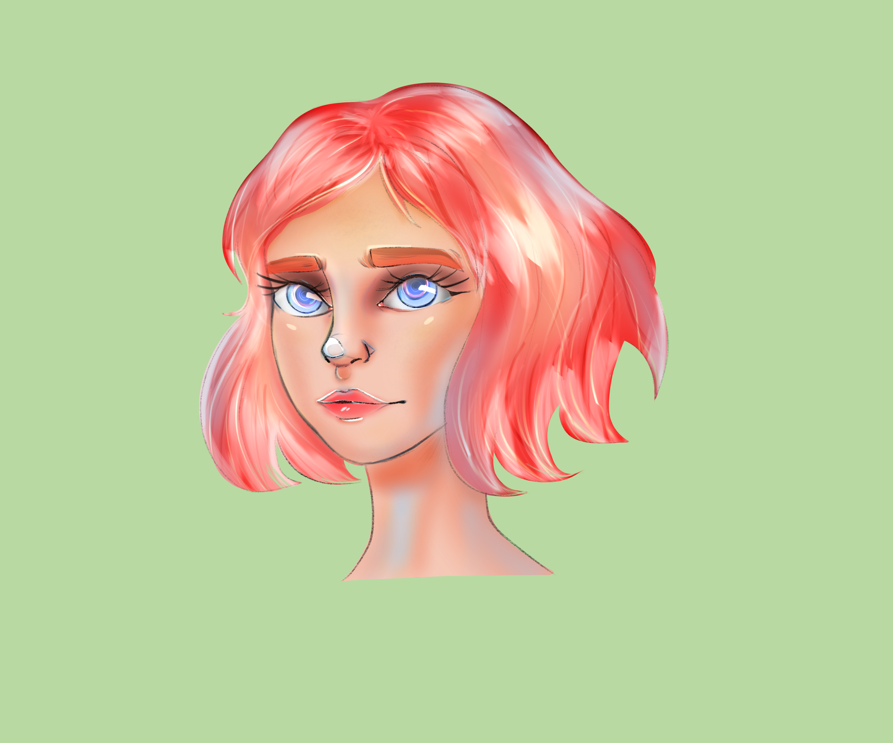

My name is XXXX. I grew up and attended high school in Durban, South
Africa and moved to Johanessburg in 2019 for university. I've always
had an interest in technology, programming and video games, and so
the digital arts engineering degree at the University of the
Witwatersrand was perfect for me!
Along with designing games, I practice digital art and would like to
work as a digital illustrator.
My art style is inspired by a lot of animated media, and so my art
tends to be cartoonish in nature, with very simple elements of
colour and lighting.
I intend to use this portfolio as a way to showcase my digital
artworks.
